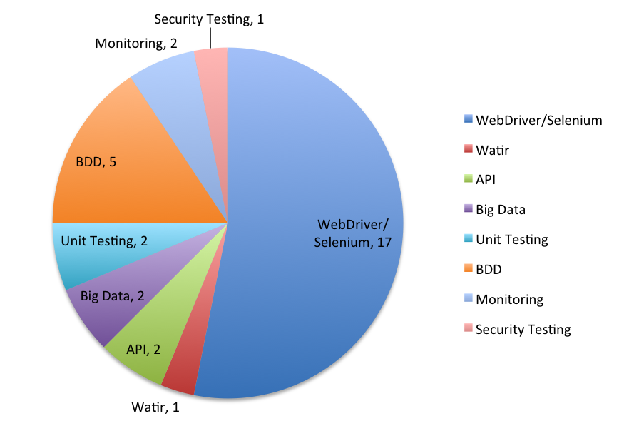
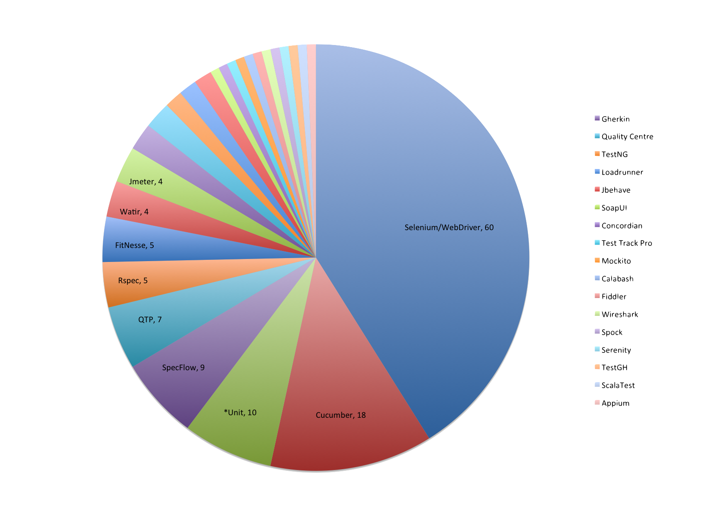
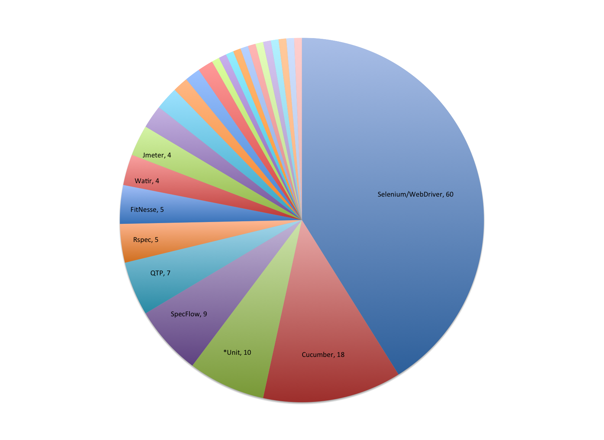

What's so great about WebDriver?
Created by Mark Winteringham / @mwtestconsult
 -
-  -
-  -
- 
Automation: Time to change our models
Iain McCowattMental models
'Look at the world through a different pair of lenses every time you have a problem'
www.ministryoftesting.com/2014/05/automation-time-change-models-iain-mccowatt/
'Automator Jim' knows WebDriver
Jim wants to automate checking a service validates a range of payloads
Jim builds a script in WebDriver via the UI the service consumes
It results in automation that's slow and brittle
Jim continues to tinker with the script
It's too hard!
'We shape our tools and then our tools shape us'
What if Jim knew about a different tool or approach?
'Be promiscuous'
Learn more models, learn more tools
What if Jim isn't even aware that these tools exist or that he could benefit in learning them in the first place
What if we, the testing community, have limited models about automation and are consequently feeding those same limited models back to testers like Jim?
Automation workshops/talks in conferences

5 popular conferences 2012 - 2015 Talks and workshops explicitly talk about an automation tool
Automation tools in Job specs

67 Jobs roles
Keywords: Developer in test, Automation test engineer
Source: cwjobs.co.uk – 23/1/15
Keywords: Developer in test, Automation test engineer
Source: cwjobs.co.uk – 23/1/15
What's so great about WebDriver?
It offers us only one model of approach
Automating through the UI!

Where are the workshops or requirements for skills in:
Monitoring
Deployment
Configuration management
Test data population
Parsing data
API testing
Unit testing
So what could we do?
Personal
Look further afield to learn new tools
Tinker around with other tools
Think more about the problem you want to solve, is your current model enough?
Community
Demand more diversity in automation training
When writing job roles focus more on the problems that need solving